Conteúdos: Funções Afim, Funções Quadráticas, Funções Exponenciais, Logaritimos.
Função Afim pode também ser chamado de equação de 1° grau, contendo 2 números reais "a" e "b". Sendo f(x) = ax + b. "a" e "b" são valores que não mudam. E "a" sempre tem que ser diferente de 0, porque se o "a" for zero, 0.x = 0, ou seja a função não teria grau e não seria função afim.
Lei da Função: um exemplo para explicar.
Exemplo: Um vendedor foi contratado para trabalhar em uma loja de peças automotivas. Seu salário é constituído de uma parte fixa de R$ 1650,00 mais R$ mais R$ 3,00 por peça vendida. Qual é a lei de formação dessa situação?
S = salário
S = 1650 + 3.peças -> S = 1650 + 3.200. A quantidade de peças que ele vende pode variar, ou seja ela é uma variável. S = 1650 + 600 ---> S = 2250. S = salário, X= peças.
A lei de formação seria S = 1650 + 3.X. Ou seja o S depende da quantidade de peças vendidas, enquanto o x é independente, porque ele que vai dizer quanto vai ser o salário. Foi isso que eu entendi.
Gráfico de uma Função Afim
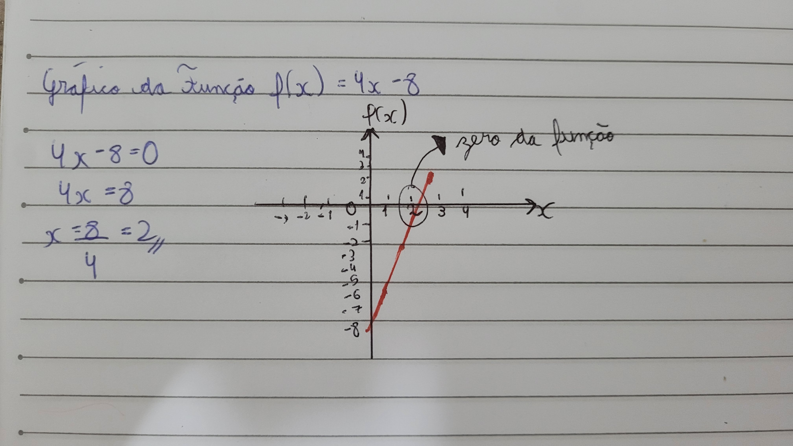Achar onde tem o coeficiente linear da função, o "b", ou seja o -8(eixo das ordenadas), eixo vertical. E para achar o eixo das obssissas é só encontrar o zero da função e depoois fazer a reta.
Esse conteúdo eu achei fácil de entender, inclusive esses são algumas vídeo aulas que eu assisti, para me ajudar a entender.
f(x) = ax² + bx + c, "a" diferente de 0.
Exemplo: Em uma confecção, com capacidade para produzir 7000 unidades mensais, o custo de cada camiseta varia de acordo com a quantidade produzida e é expresso, em milhares de reais, pela função C(x) = 0,5x² -4x + 9, em que x é a quantidade de milhares de camisetas produzidas. Qual o custo para a produção de 2000 camisetas?
2000 camisetas = 2 milhares.
C (2) = 0,5.2² - 4.2 + 9 --> 0,5.4 -8 +9 --> 2-8+9 -->3-->C(2)=3-->C(2000)=3000, ou seja o custo de 2 mil camisetas é 3 mil reais. Trocar a variável independente pelo que o enunciado disse.
Gráfico de uma Função Quadrática
Cortar o -3 no Y, e para encontrar onde corta no eixo X, basta encontrar os zeros da função, igualando ela a zero. Eu optei por resolver ela por báskara, porque como eu já sabia resolver a fórmula de baskara, eu me adaptei melhor assim. Depois é só encontrar o X do vértice e o Y do vértice, para poder formar uma parábola. Em passos: -corta o y no valor que corresponde o c, depois iguala a função a 0 para poder achar os os valores de x e cortar no gráfico, depois acha os vértices de X e Y e corta no gráfico, achando o vértice da função. 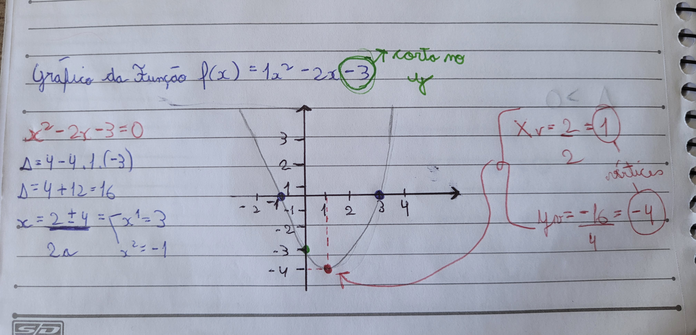E sobre o formato da parábola, se o A for maior que 0, ele ficará virado para cima, como se fosse um rosto sorrindo, feliz. Enquanto o A for menor que 0, ele ficará virado para baixo, como se estivesse triste. Aqui está um resumo que eu fiz no caderno.
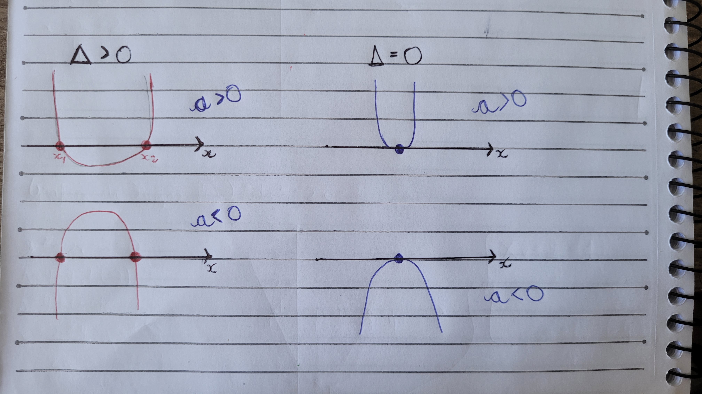 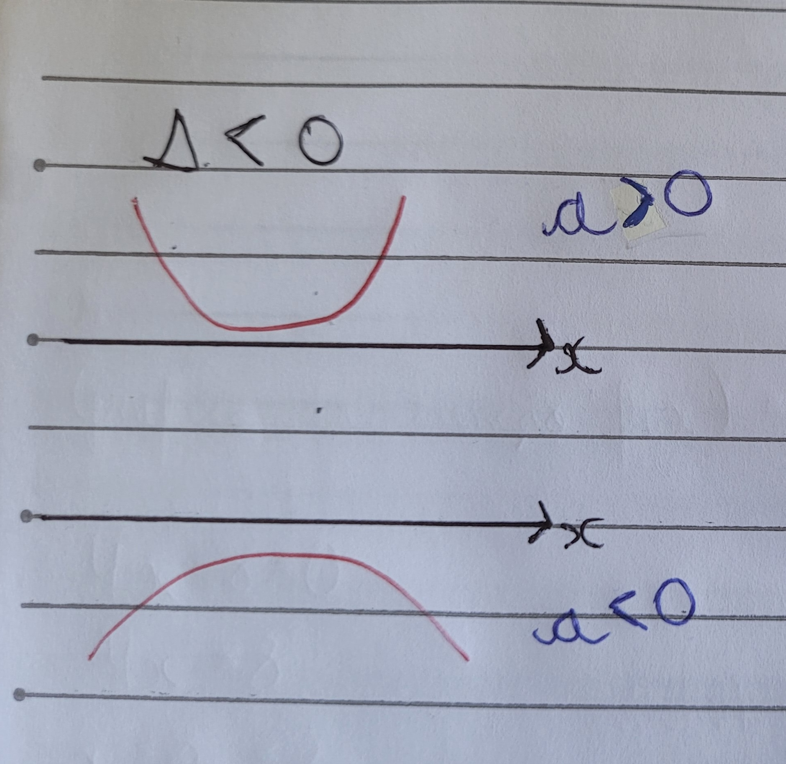Aqui está algumas vídeo aulas que me ajduaram a entender o conteúdo.
São equações que apresentam a incógnita como expoente.
Exemplo:
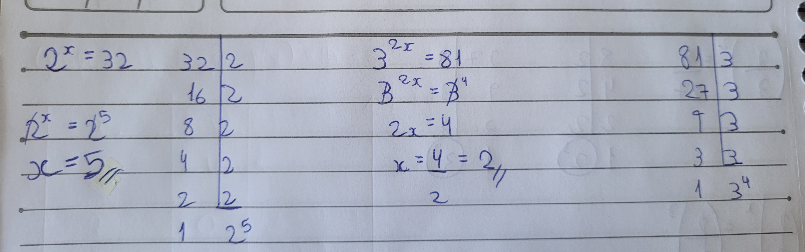Depois de decompor o 81, anula as bases e iguala os expoentes. Depois é só dividir 4/2, e o x = 2.
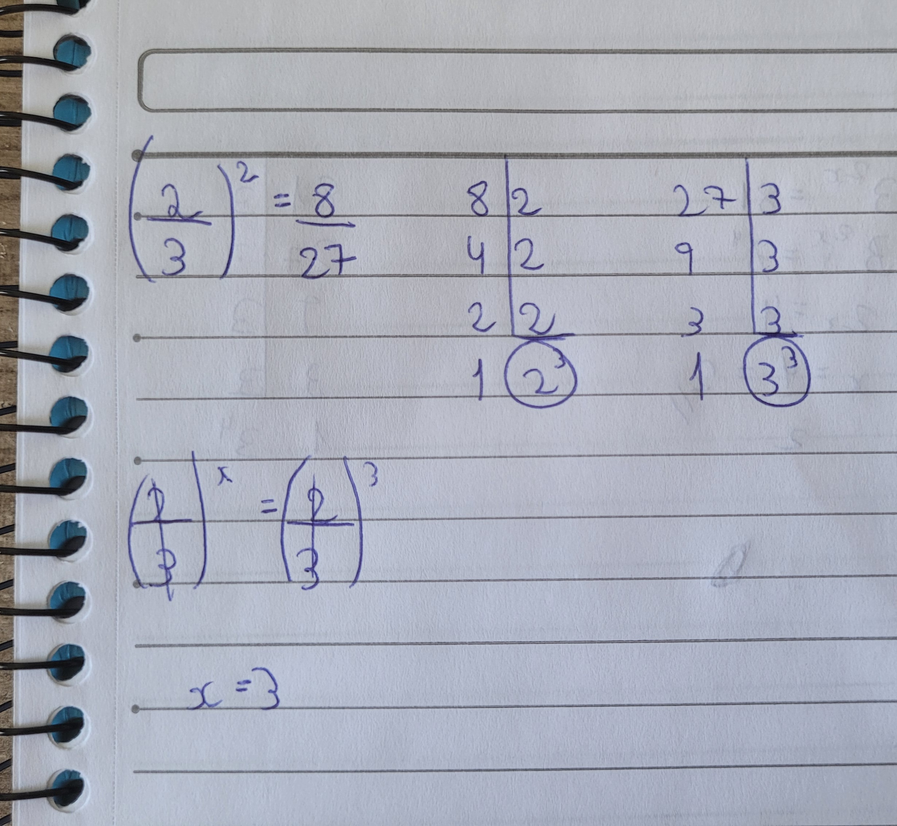Nesse outro exemplo é só decompor o 8 e 27, depois anula as bases porque são iguais. Iguala os expoentes, então x = 3.
Esse conteúdo eu entendi bem, é só decompor e lembrar das regras das potências. Fazer as bases ficarem iguais, para poder anular elas, e fazer a igualdade entre os expoentes.
Aqui está algumas vídeo aulas que me ajudou a entender o conteúdo.
Log de um número na mesma base é sempre 1. Exemplo: log 2 de base 2, o logaritimando é 1, pois qualquer número elevado a 1, o resultado será ele mesmo.Se não tiver nada na base, quer dizer que a base é 10. Ou seja qual base elevado ao logaritimo dá o logaritimando?
Aqui um exemplo de log com raíz:
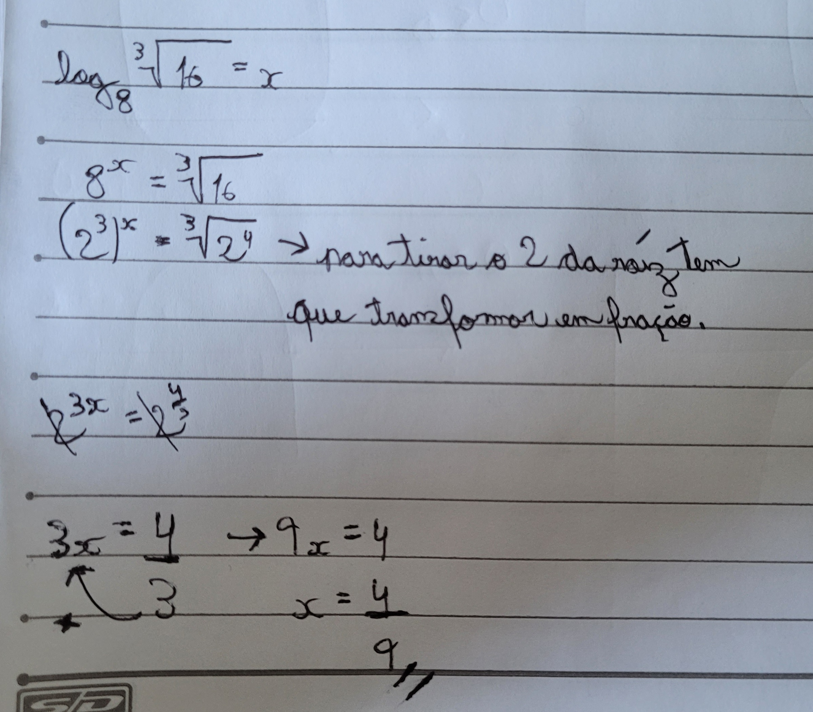Propriedades
Primeira propriedade: Transformamos o produto em uma soma de logaritimos.
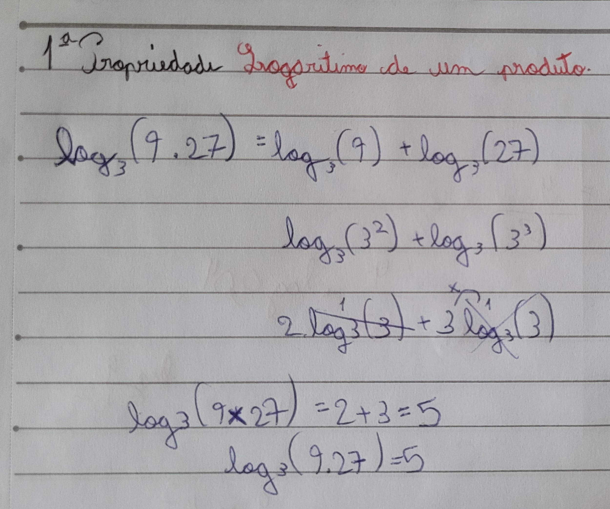Segunda propriedade: Transformamos o produto em uma subtração de logaritimos.
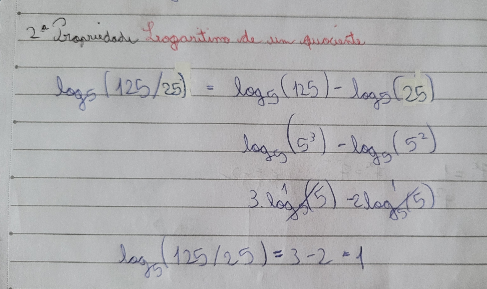Terceira propriedade: Quando o logaritmo de uma potência é igual ao expoente multiplicado pelo logaritmo da base.
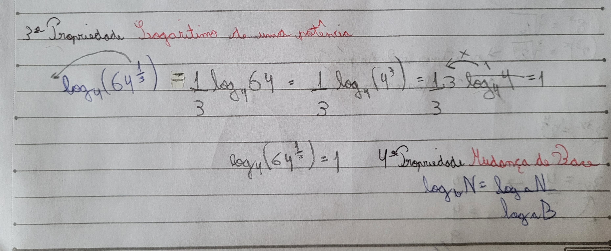Quarta propriedade: você pode-se usar quando você deseja calcular usando uma calculadora que só calcula logaritmos na base 10, você pode aplicar a mudança de base:
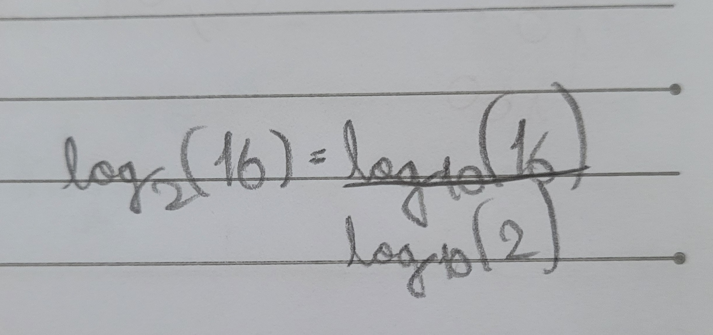Vídeo aulas que eu assisti:
Sobre esse conteúdo, eu entendi bem. Porém ainda tá meio confuso para mim, eu acho que tem muitas regras, mas eu entendi mais ou menos como que faz(como explicado acima). Agora meu foco é assistir mais algumas vídeo aulas e fazer mais exercícios para conseguir me organizar. Acredito que depois disso não vou ter dificuldade, pois eu entendi bem os outros conteúdos e está funcionando até então.
Voltar ao topo